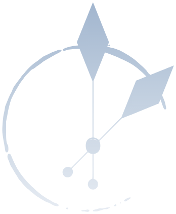
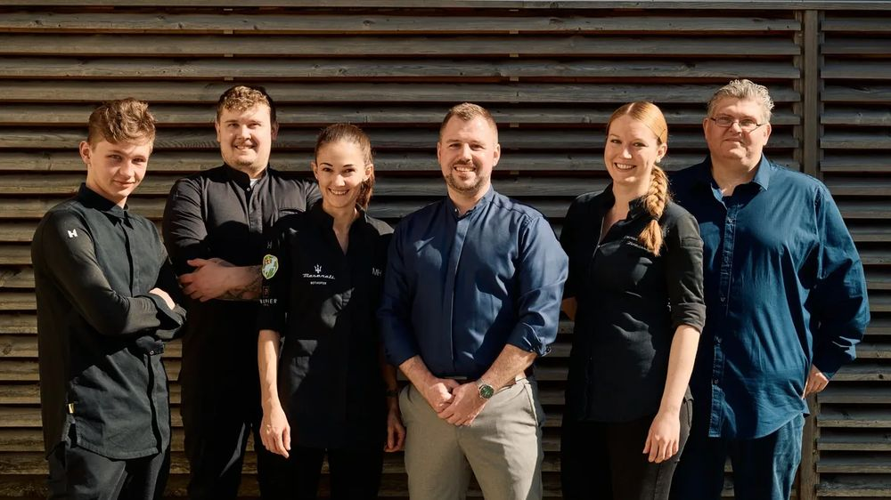

|

SCHLÖSSLI
Wirtschaft am Schlössli · Bottighofen
Ihr Gutschein
ist da.
|
Liebe Frau Keller Vielen Dank. Ihr Gutschein hängt als PDF an dieser Mail, mit Ihrem Satz darauf. Drucken Sie ihn aus oder schicken Sie ihn weiter. Eingelöst wird er bei uns am Hafen. |
|
Ihr Gutschein · Beispielwerte
| Für | Anna und Luca | | Von | Mama | | Betrag | CHF 150 | | Satz | «Ein Abend am See» |
| |
| Einen Tisch reservieren ↗ |
Fragen dazu beantworten wir gern unter +41 71 688 90 92.

Herzlich, Monika Huber, Jonas Volpert und das Team |
WIRTSCHAFT AM SCHLÖSSLI
Seestrasse 50 · 8598 Bottighofen
+41 71 688 90 92 · kontakt@schloessli-bottighofen.ch |